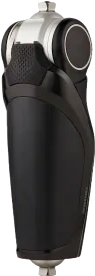
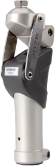

Коленные модули

Пневматические и гидравлические
Для пациентов среднего и высокого уровня активности. Имеют большой потенциал к регулировке, как следствие динамичная и физиологичная ходьба при меньших энергозатратах пациента.

Механические
Для первичного протезирования с низким уровнем активности.

С-LEG

STEPLIFE P5

RHEO KNEE XC
RHEO KNEE XC
Специалисты отдела сопровождения пациентов помогут оформить необходимые документы и ответят на Ваши вопросы. Вы получите пошаговую инструкцию для получения протеза. Также подготовим МТЗ для Вас. Вы сможете обратиться к нам за бесплатной консультацией на всех этапах оформления документов.
бесплатная консультация